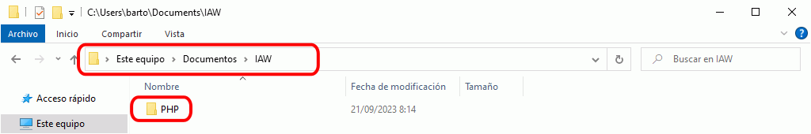
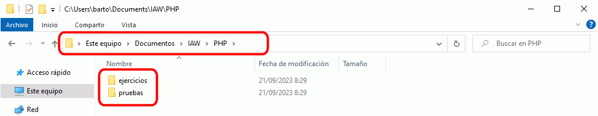
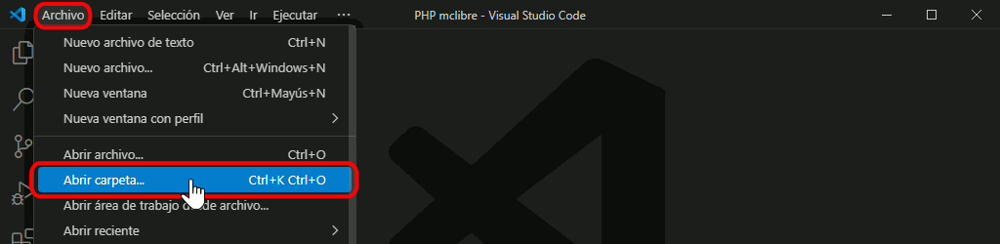
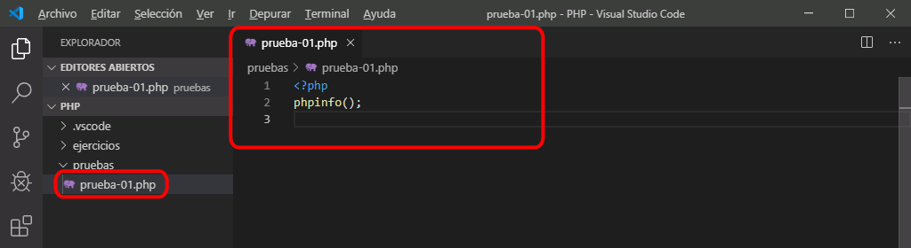
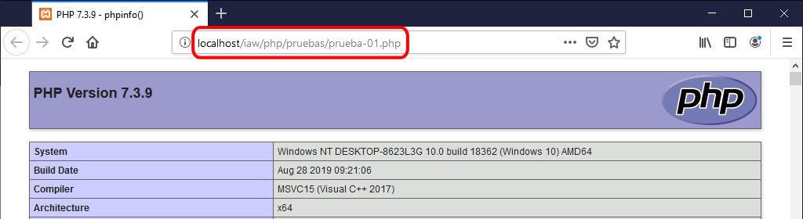

Tema de color recomendado para el curso de PHP
El tema de color es un aspecto muy personal por lo que se deja a elección del alumno el tema de color empleado.
En las capturas de los apuntes se empleará el Tema Dark+ (default dark).

Esta es la configuración de Visual Studio Code que se recomienda para seguir el curso Iniciación a la programación de páginas web en PHP de mclibre.org.
Antes de configurar Visual Studio Code, se recomienda leer la lección Personalización de VSC, en la que se explica detalladamente cómo se personaliza Visual Studio Code.
El tema de color es un aspecto muy personal por lo que se deja a elección del alumno el tema de color empleado.
En las capturas de los apuntes se empleará el Tema Dark+ (default dark).
Esta es el área de trabajo recomendada para seguir el curso Iniciación a la programación de páginas web en PHP de mclibre.org.





Estas son las preferencias de configuración que se aconseja establecer para seguir el curso Iniciación a la programación de páginas web en PHP de mclibre.org.
// CONFIGURACIÓN PARA PHP
//
// PHP
// Señala al ejecutable PHP.
"php.validate.executablePath": "C:\\xampp\\php\\php.exe",
//
// Indica si linter se ejecuta al guardar o al escribir.
"php.validate.run": "onType",
//
// PHP Intellisense
// The path to a PHP 7+ executable.
"php.executablePath": "C:\\xampp\\php\\php.exe"
Estas son las extensiones que se aconseja instalar para seguir el curso Iniciación a la programación de páginas web en PHP de mclibre.org.

Autor: Felix Becker
Marketplace: PHP Extension Pack
Estas son las tareas que se aconseja crear para seguir el curso Iniciación a la programación de páginas web en PHP de mclibre.org.
{
"label": "Abrir en localhost (Firefox)",
"command": "explorer",
"windows": {
"command": "C:\\Program Files\\Mozilla Firefox\\firefox.exe"
},
"args": [
"localhost/${workspaceFolderBasename}/${relativeFile}"
],
"presentation": {
"reveal": "never"
},
"problemMatcher": []
},
{
"label": "Abrir en localhost (Chrome)",
"command": "explorer",
"windows": {
"command": "C:\\Program Files (x86)\\Google\\Chrome\\Application\\chrome.exe"
},
"args": [
"localhost/${workspaceFolderBasename}/${relativeFile}"
],
"presentation": {
"reveal": "never"
},
"problemMatcher": []
}
En las tareas, los valores de "args" pueden adaptarse al alias configurado en el servidor web para acceder a los ficheros. Por ejemplo:
"args": [
"localhost/nombre-alumno/iaw-php/${relativeFile}"
],
Estos son los atajos de teclado que se aconseja definir para seguir el curso Iniciación a la programación de páginas web en PHP de mclibre.org.
{
"key": "ctrl+alt+l ctrl+alt+f",
"command": "workbench.action.tasks.runTask",
"args": "Abrir en localhost (Firefox)"
},
{
"key": "ctrl+alt+l ctrl+alt+c",
"command": "workbench.action.tasks.runTask",
"args": "Abrir en localhost (Chrome)"
}
Estos son los pasos a realizar para utilizar alguno de los atajos de teclado personalizados:

